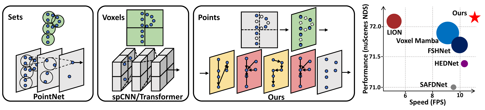
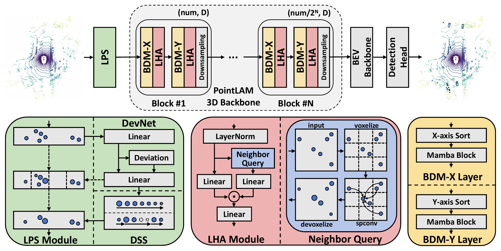
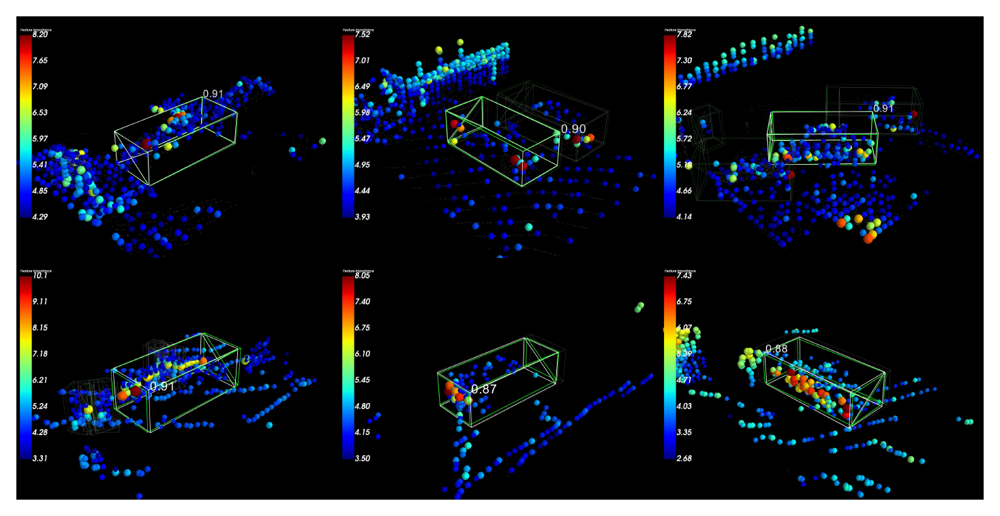
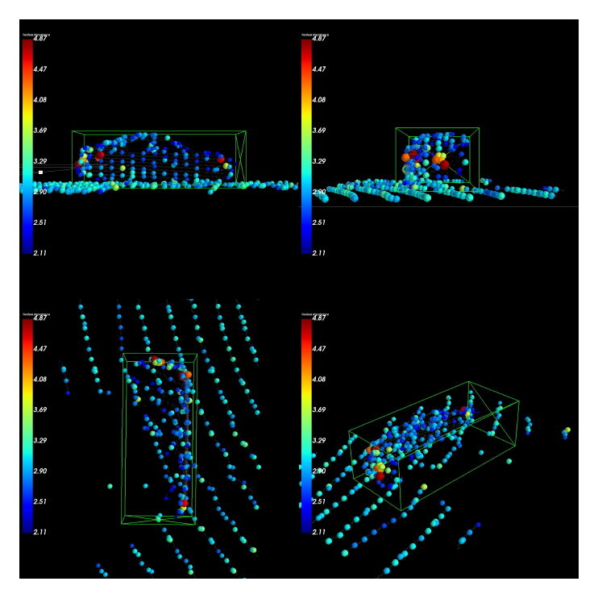

Laplacian Point Sampler
LPS highlights high-frequency geometric structures such as boundaries and corners, then keeps salient points through fast global and regional sorting instead of iterative FPS.
ECCV 2026
A point-based LiDAR detector that preserves fine-grained geometry while closing the efficiency gap with highly optimized voxel-based models.
MoE Key Lab of Artificial Intelligence, Institute of AI, Shanghai Jiao Tong University

3D object detection from LiDAR point clouds faces a core dilemma: voxel-based methods are efficient but lose geometric fidelity through quantization, while point-based methods preserve raw structure but suffer from slow downsampling and costly neighborhood queries. PointLAM addresses these bottlenecks with two complementary designs. The Laplacian Point Sampler (LPS) uses an implicit discrete Laplacian high-pass filter and Doubly Sorted Sampling to retain structure-aware foreground points efficiently. The Local Hadamard Aggregator (LHA) decouples spatial indexing from point feature representation through transient grids and replaces expensive continuous interactions with lightweight Hadamard gating. Combined with Bi-Directional Mamba layers, these components form Local Attentive Mamba blocks for efficient local and global modeling.
LPS highlights high-frequency geometric structures such as boundaries and corners, then keeps salient points through fast global and regional sorting instead of iterative FPS.
LHA uses a transient grid only as a deterministic spatial router. Point features remain continuous, while local topology modulates channels through Hadamard gating.
LAM blocks anchor local geometry before serialization and use Bi-Directional Mamba layers to model long-range dependencies with linear sequence complexity.

with 68.8 mAP, establishing a strong point-based detector baseline.
with 79.8 L1 mAPH under the single-frame setting.
with 8.6M parameters and 93.1ms latency on a single NVIDIA A800 GPU.
On nuScenes validation, PointLAM reaches 72.2 NDS and 67.8 mAP. On Waymo validation, it reaches 79.7 L1 and 73.6 L2 3D mAPH. Compared with LION, PointLAM reports higher nuScenes validation NDS with substantially fewer FLOPs and lower latency.

Points retained by the sampler and processed by LHA concentrate high responses around object structures. The visualization highlights how PointLAM keeps informative foreground geometry instead of relying on coarse voxel aggregation.

@inproceedings{shang2026pointlam,
title={PointLAM: Local Attentive Mamba for Efficient Point-based 3D Object Detection},
author={Shang, Xuanming and Zhang, Weijia and Ma, Chao},
booktitle={European Conference on Computer Vision (ECCV)},
year={2026}
}